Vehicle -to -middle device
Plane degree analysis
why to do？
If Calibration Group and Vehice Positioning Plane are not level, it will lead to
The external parameters of LIDAR and Camera to the vehicle coordinate system are not allowed
View camera BEV stitching abnormality
how to do？
Treatment of high -precision point clouds, divide the calibration floor and vehicle positioning plane
Plane fitting, algorithm vector, decompose pitch and roll
Direct measurement through cross lasers Bosch's plane test report on China institution + Bosch's plane detection picture .PDF
Vehicle Four Wheel Center
Vehicle positioning plane
conclusion
Calibration Group and Vehice Positioning Plane basic level, Delta_PITCH = 0.02degree，delta_roll = 0.03degree
The flatness of the vehicle positioning plane is ± 5mm
|
|
Calibration ground |
Vehicle positioning plane |
|
Plane fit +/-5mm |
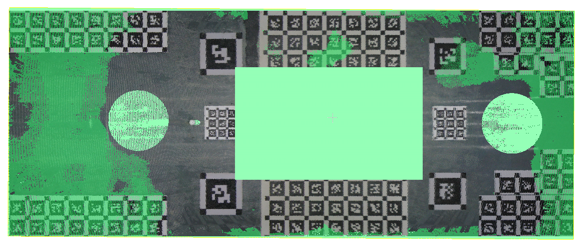 |
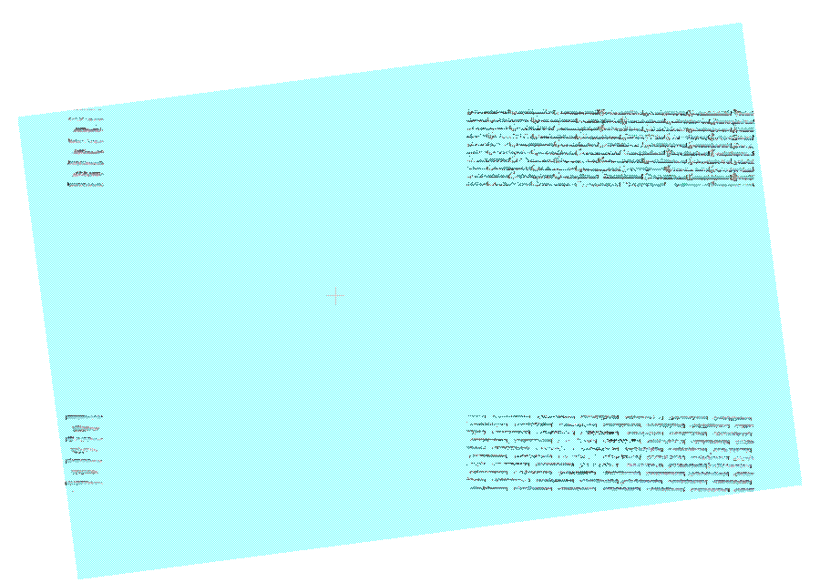 |
|
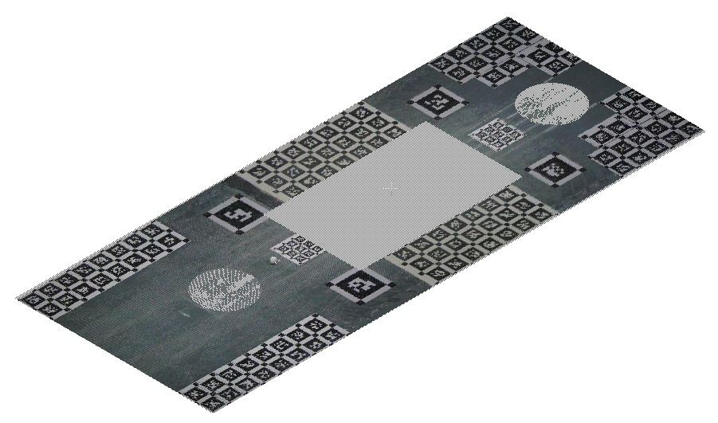 |
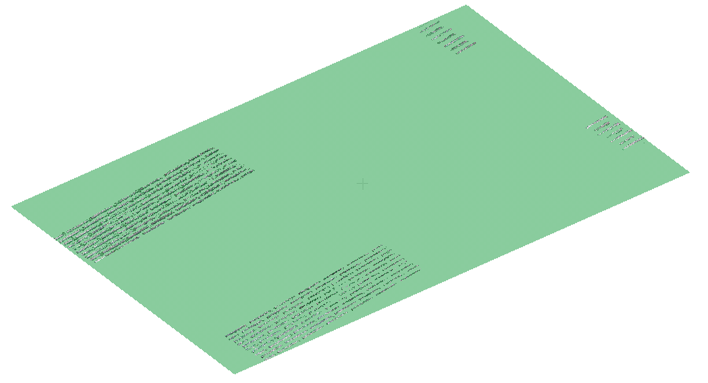 |
|
|
plane fitting RMS |
0.004597 |
0.001744 |
|
normal |
0.000190, 0.000097, 1.000000 |
0.000119, -0.000331, 1.000000 |
|
A matrix that would make this plane horizontal (normal towards Z+) |
0.999999940395 -0.000189730257 0.000189711762 0.000005245209 0.000189711747 1.000000000000 0.000097513199 0.000401601195 -0.000189730243 -0.000097513199 1.000000000000 -0.000398788368 0.000000000000 0.000000000000 0.000000000000 1.000000000000 |
0.999999880791 -0.000331337273 0.000118613243 0.000034332275 0.000331376592 0.999999880791 -0.000331337331 0.000857174397 -0.000118315220 0.000331376563 0.999999880791 -0.000340575003 0.000000000000 0.000000000000 0.000000000000 1.000000000000 |
|
Rotation matrix |
[ 0.9999999, -0.0001897, 0.0001897; 0.0001897, 1.0000000, 0.0000975; -0.0001897, -0.0000975, 1.0000000 ] |
[ 0.9999999, -0.0003313, 0.0001185; 0.0003314, 0.9999999, -0.0003313; -0.0001184, 0.0003314, 0.9999999 ] |
|
XYZ Euler angles (degree) |
[ x: -0.0055881, y: 0.0108697, z: 0.0108707 ] |
[ x: 0.0189842, y: 0.0067906, z: 0.0189842 ] |
|
ZYX Euler angles (degree) |
[ x: -0.0055861, y: 0.0108707, z: 0.0108697 ] |
[ x: 0.0189865, y: 0.0067844, z: 0.0189865 ] |
|
delta Euler angles (degree) roll:0.0245744 pitch:-0.00408712 yaw:0.00811214 |
||
|
height |
0.00229494 |
0.0019251 |
|
inlier ratio（5mm） |
85.308661 |
96.743973 |
|
roll (degree) |
0.0468272 |
0.0779117 |
|
pitch (degree) |
0.00612319 |
0.0259087 |
|
delta_pitch =
0.0197855
degree / delta_roll =
0.0310845
degree |
||
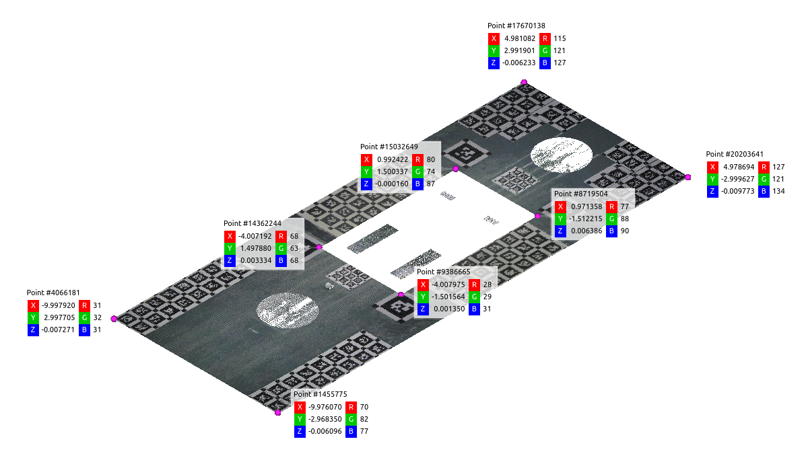 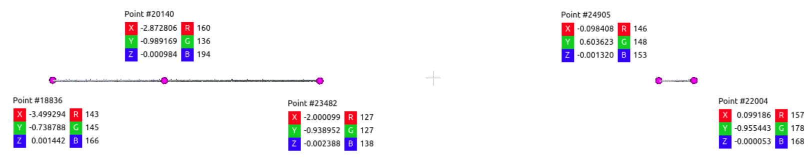
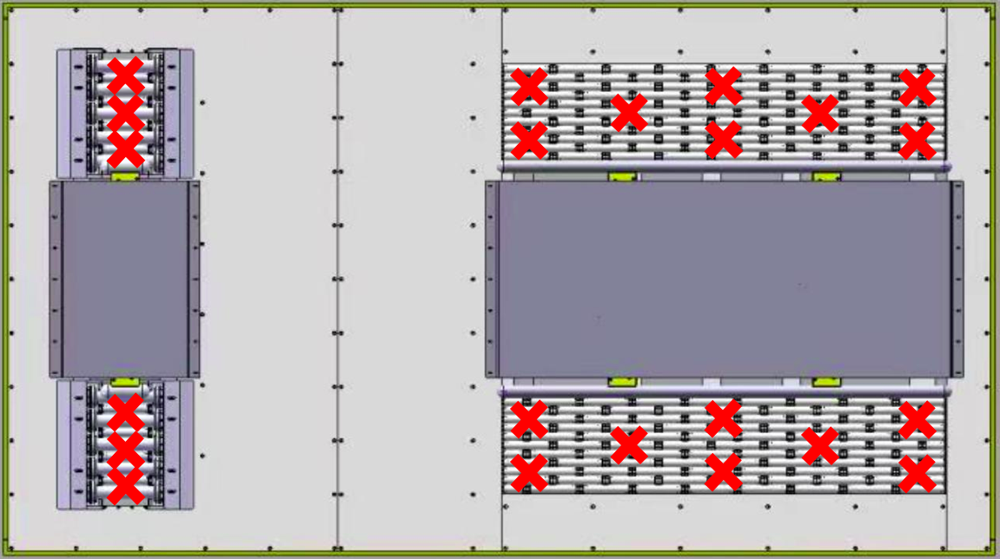 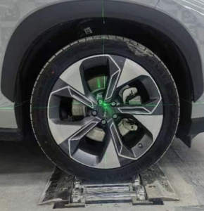 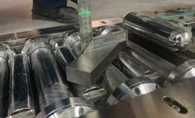
Consistency analysis
why to do？
If the consistency of vehicle positioning is poor, the external parameters of the Lidar and Camera to the vehicle coordinate system will be inaccurate.
how to do？
Place the high -precision scanner on the left and right sides of the vehicle, and observe the front and rear wheels
Repeat the vehicle five times by repeating the vehicle by the Chinese agencies, and collect five sets of high -precision points cloud
Extract the wheel heart in the high precision point cloud, calculate YAW
conclusion
Good consistency, high repeated positioning accuracy
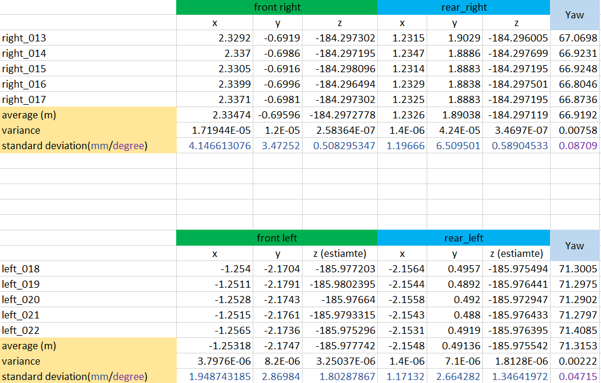
Calculate the transformation matrix of the vehicle coordinate system to the calibration coordinate system T_V_W
why to do？
The external parameters of Lidar and Camera are converted from the calibration coordinate system to the vehicle coordinate system
how to do？
Extract the four wheel hearts in the high precision point cloud
Calculate yaw and T_V_W
conclusion
The original point of the vehicle coordinate system is defined as The projection point from the center of the rear axis to the ground (For the front axis of the middle institutional card, the rear axis floats)
yaw Corner deviation 0.3 Degree
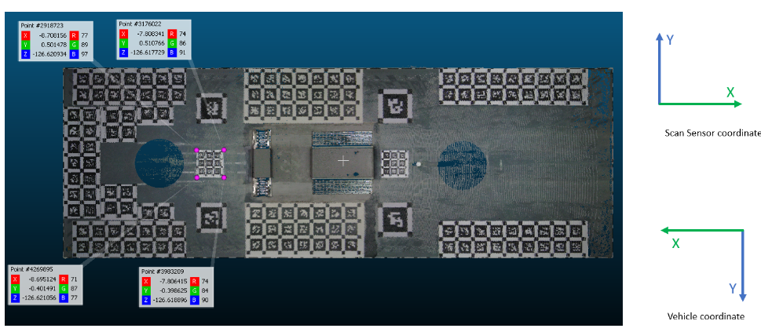
|
|
Left front wheel center |
Left rear wheel center |
Right front wheel center |
Right rear wheel center |
|
scan sensor coordinate |
-6.54787, -0.828905, -126.273 |
-3.6565, -0.812194, -126.27 |
-6.56539, 0.96816, -126.274 |
-3.76628, 0.983543, -126.278 |
From the center point of the left and right front wheels under the Scan Sensor Coordinate, you can find the center axis center to the ground projection point: -6.55663,0.0696275, -126.618
After multiple sets of data observations, the rotation vector of the two coordinate systems is yAW angle and not 180 °, but exists
0.3° One deviation
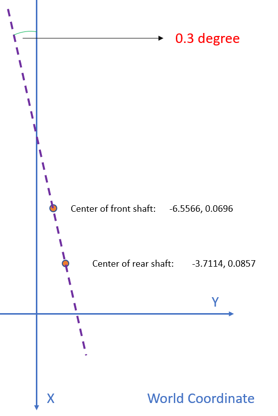
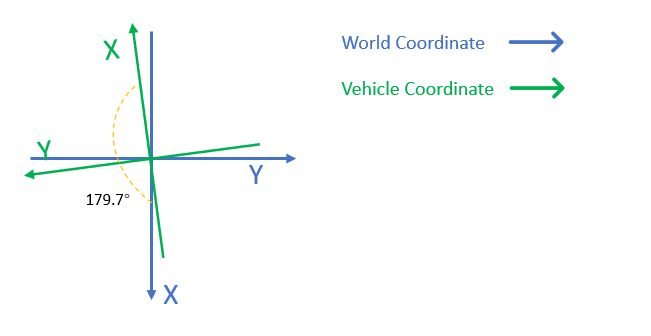
After considering this 0.3 ° compensation, the world coordinate system is transferred to the car body coordinate system.
T_Vehicle_World
:
[
-0.9999863
,
-0.0052360
,
0.0
,
-6.55618
,
0.0052360
,
-0.9999863
,
0.0
,
0.103957
,
0.0
,
0.0
,
1.0
,
126.618
,
0.0
,
0.0
,
0.0
,
1
]
Use this transform to convert the center point of the front and rear shafts to the coordinate system of the car (
Projection point from the center center to the ground to the ground
) After that, they are:
The center point of the front axis (0, 0, 0.34)
The center point of the rear axis (-2.84528,
-0.00117472
, 0.34）
Although the Y value of the center point of the rear axis is not 0, it is only 1.2mm considered that the bias is only 1.2mm, which is within the range allowed by the error.
*If you do not consider the bias of the yaw angle 0.3 °, the results calculated:
T_Vehicle_World_Bad_Yaw
: [
-1.0
,
0.0
,
0.0
,
-6.55663
,
0.0
,
-1.0
,
0.0
,
0.0696275
,
0.0
,
0.0
,
1.0
,
126.618
,
0.0
,
0.0
,
0.0
,
1
]
Use this transform to convert the center point of the front and rear shafts to the coordinate system of the car (
Projection point from the center center to the ground to the ground
) After that, they are:
The center point of the front axis (0, 0, 0.34)
Rear axis center point (
-2.84523,
-0.0160725
, 0.34)
It can be seen that there is one in the center of the rear axis in the direction of the y axis
1cm
Deviation
appendix: T_v_w-analyze.xlsx